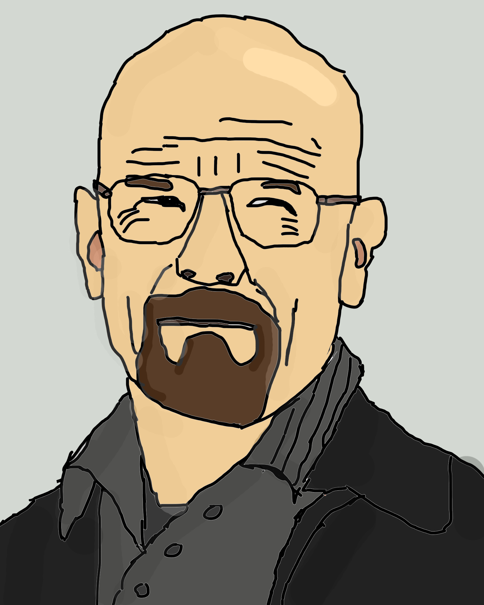
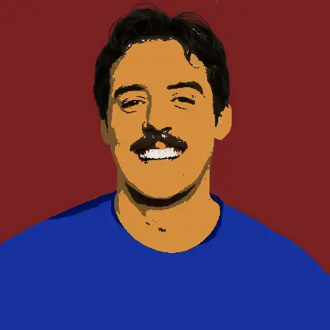
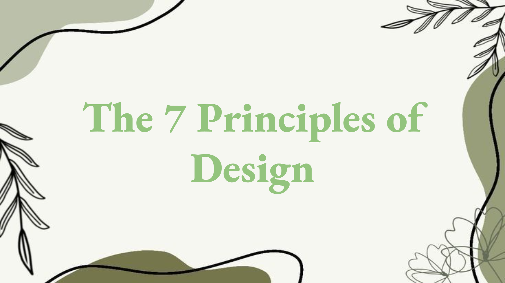
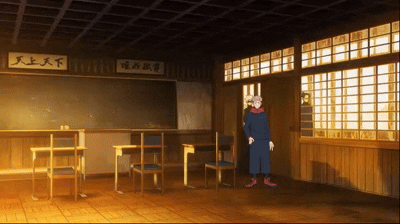

Gallery

Digital Potrait

Pop Art

Digital Art

Slides of Design

Photoshop Gif




For this assignment, we had to learn how to draw real people inside of Photoshop without the wand tool only using a reference image, brush, and eraser. For the person I chose I decided to pick the actor, Bryan Cranston, an actor who played a lot of roles, including Walter White in Breaking Bad as for I like how his role was potrayed.
For this assignment, we had to grab a picture of a real person and make it into a Pop Art style inside of Photoshop, we had to learn to use the wand tool and the paint bucket tool. For the person I choose I decided to pick the famous roblox youtuber, Denis Daily, as I personally used to watch him a lot. I honestly really liked this assignment.
For this assignment, we had to install new brushes inside of photoshop and learn how to use our brush tool to make different types of art. This piece is a canyon with a sun over it, I used the square brush with 50% opacity and the smudge/blur tool. I think it's my favorite piece so far.
For this assignment, we had to make a slideshow explaining all of the 7 Principles of Design, which includes; Emphasis, Balance, Contrast, Repetition, Porportion, Movement, and White Space. This was our first real assignment, After the Favorite Things slide, and the link is attached to the header if you would like to see it.
For this assignment, we had to create a gif in photoshop using the layers and timeline feature. This assignment was my personal favorite since I had a lot of fun making it, it wasn't taken as seriously as our usual assignments, which made it a lot easier to make along with being a fun assignment overall.